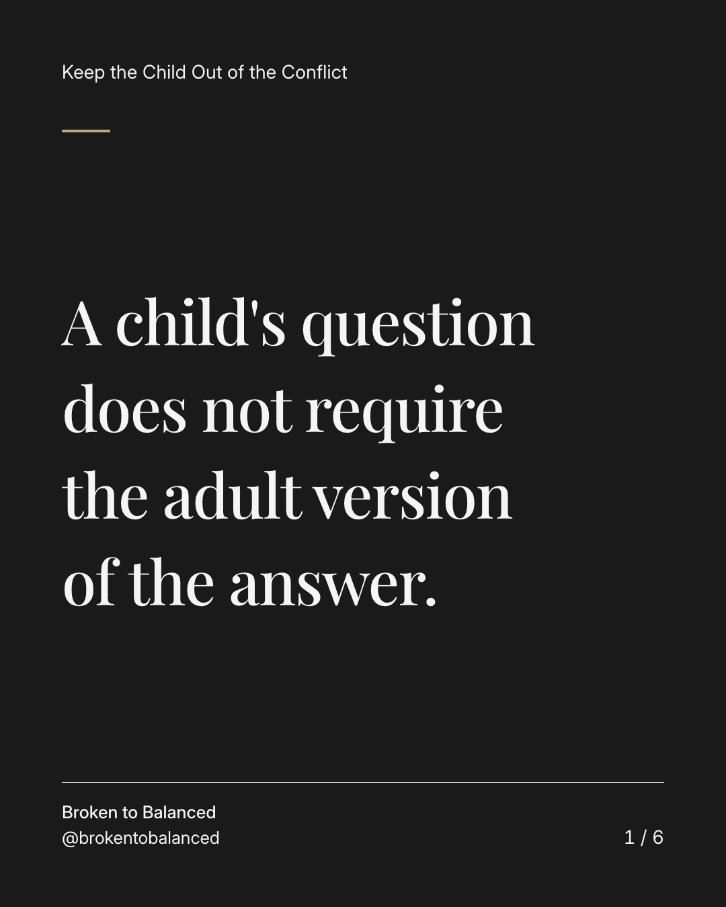
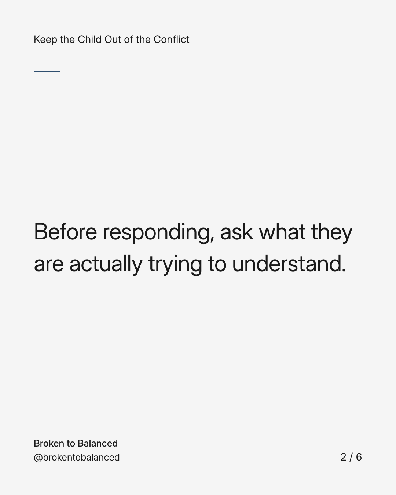
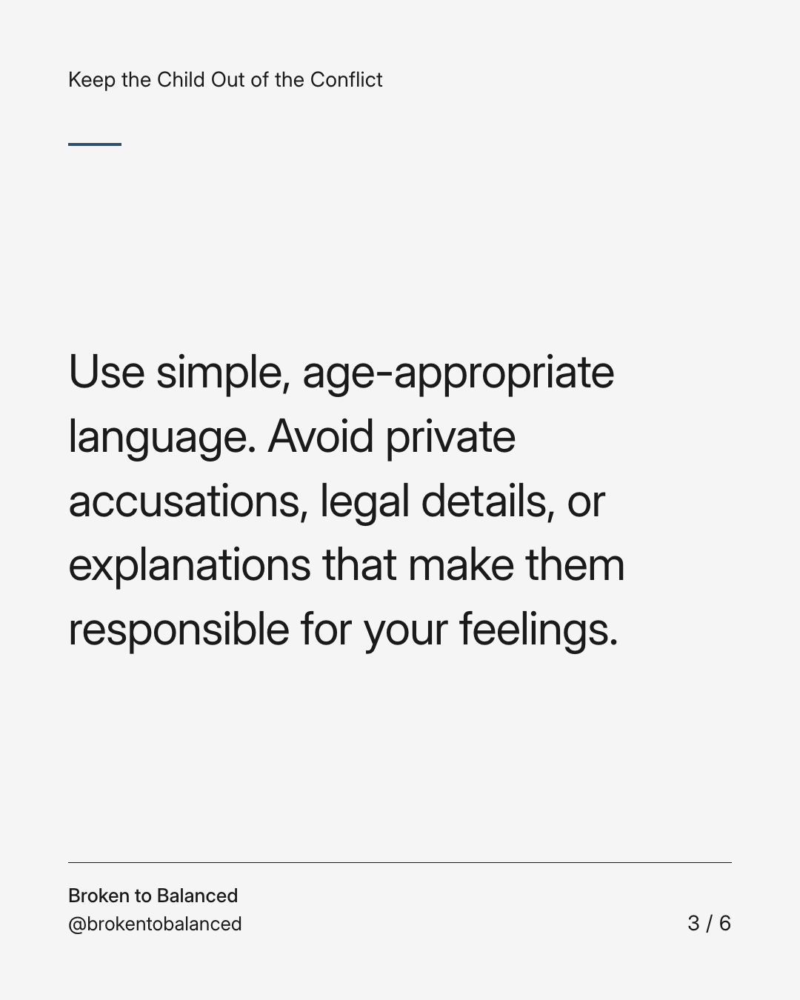
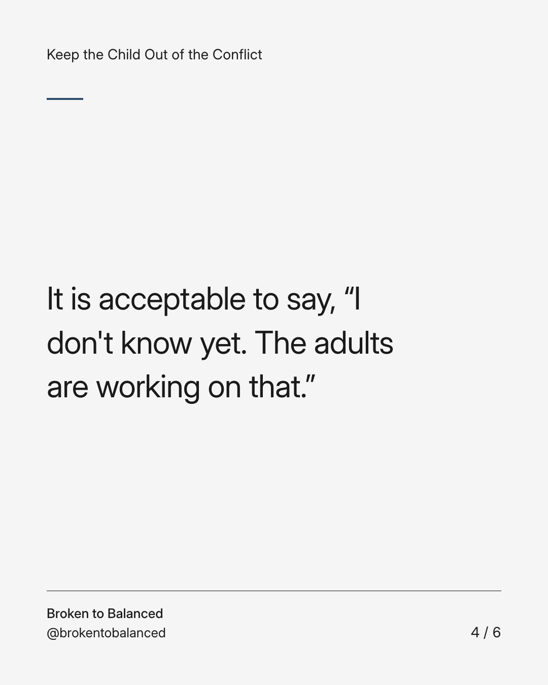
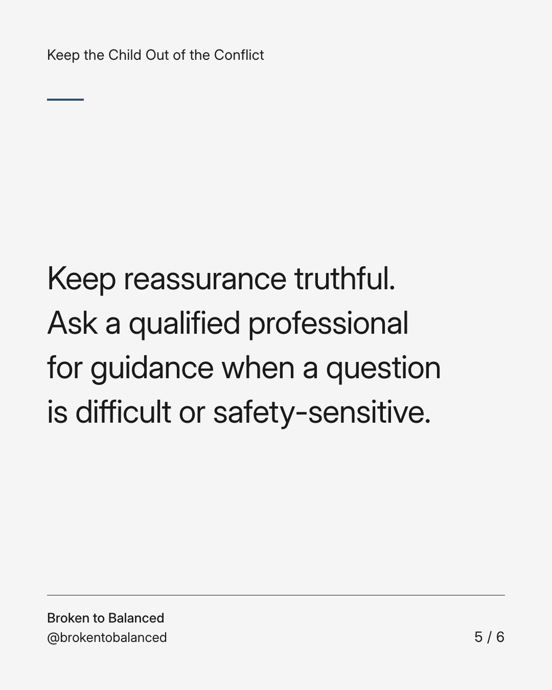
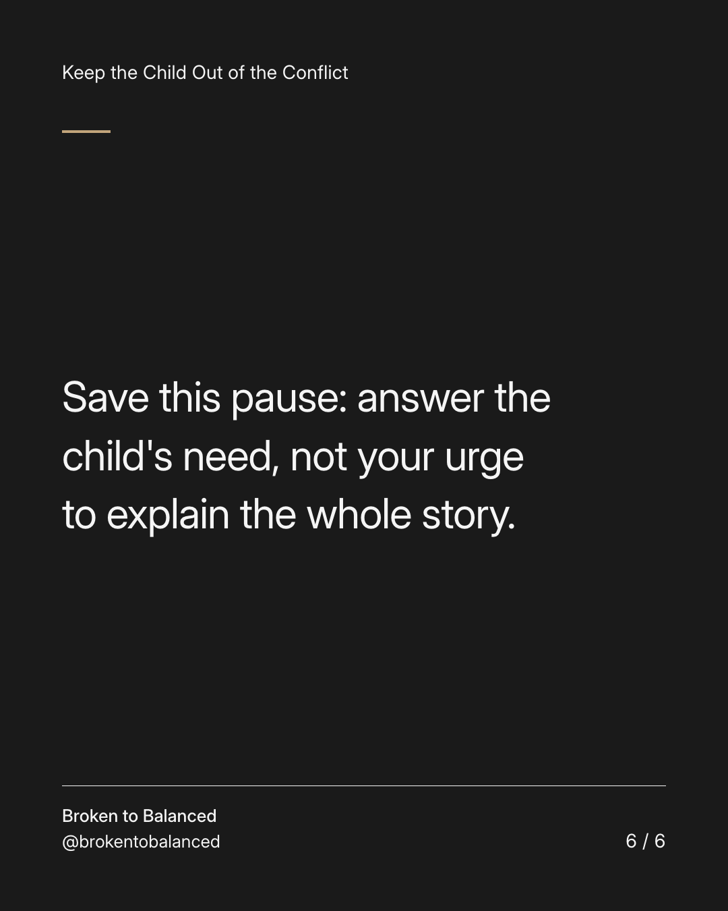

Exact text and accessibility text
A child's question does not require the adult version of the answer.
Slide 1 of 6. A child's question does not require the adult version of the answer.


Exact text and accessibility text
Before responding, ask what they are actually trying to understand.
Slide 2 of 6. Before responding, ask what they are actually trying to understand.


Exact text and accessibility text
Use simple, age-appropriate language. Avoid private accusations, legal details, or explanations that make them responsible for your feelings.
Slide 3 of 6. Use simple, age-appropriate language. Avoid private accusations, legal details, or explanations that make them responsible for your feelings.


Exact text and accessibility text
It is acceptable to say, “I don't know yet. The adults are working on that.”
Slide 4 of 6. It is acceptable to say, “I don't know yet. The adults are working on that.”


Exact text and accessibility text
Keep reassurance truthful. Ask a qualified professional for guidance when a question is difficult or safety-sensitive.
Slide 5 of 6. Keep reassurance truthful. Ask a qualified professional for guidance when a question is difficult or safety-sensitive.


Exact text and accessibility text
Save this pause: answer the child's need, not your urge to explain the whole story.
Slide 6 of 6. Save this pause: answer the child's need, not your urge to explain the whole story.
Exact caption
Plain-text fallback: select and copy the caption.